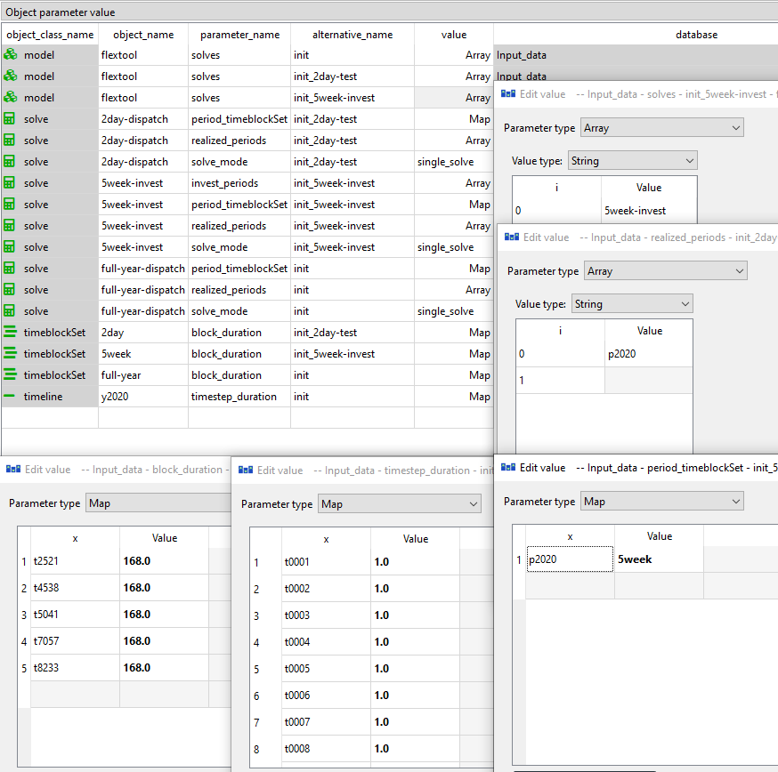
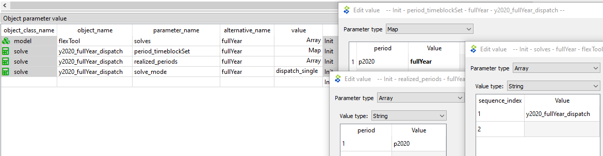
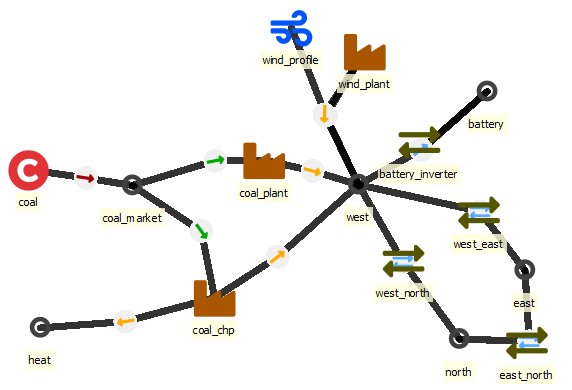
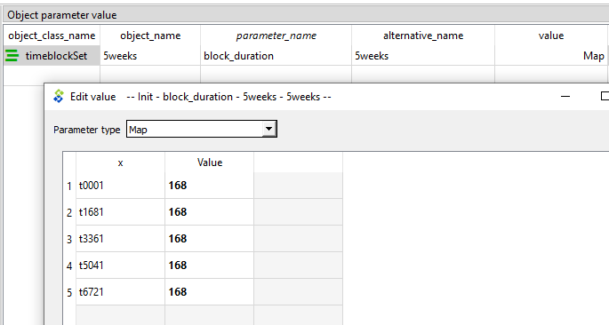

IRENA FlexTool tutorial
The instructions for installing IRENA FlexTool are at Interface overview.
This user guide will build a small system step-by-step. It assumes you will be using Spine Toolbox as the front-end. If you are using the IRENA FlexTool web-interface, the instructions still apply, but the example figures in this tutorial will not be as helpful. IRENA FlexTool concepts are explained in more depth at Model Parameters. Video tutorial for Building a small test system can be watched here.
The small system to be built is also directly available in the FlexTool repository (Init SQLite database) and can be opened with the Spine Toolbox database editor. The default workflow for IRENA FlexTool executes the scenarios from the Input data database (and not from the Init SQLite database). The Input data database is empty by default. Therefore, if you want to use directly the contents of the Init database (instead of building the small system step-by-step), you need to copy them to the Input data database before running the scenarios in this tutorial. To copy the data, you need to execute the Initialize workflow item: select the item, press Execute selection from the toolbar. It is not advised to run the whole workflow, (Execute project) since it will copy data from two sources: the Excel based input data file and the Init database and this will create two sets of data in the Input data database.
More information on how to set-up and use the Spine Toolbox front-end in Toolbox interface.
If not done already, in the flextool folder make a copy of the Results_template.sqlite and rename it Results.sqlite.
Remark: in case you had already populated the Input data database, you need to delete the data before importing from Init SQLite database. This can be done with the 'purge' tool from the Database Editor menu: in purge, click on both Select entity and value items, and Select scenario items and then purge.
- Building a small test system
- 1st step - a node with no units
- 2nd step - add a coal unit
- 3rd step - add a wind power plant
- 4th step - add a network
- 5th step - add a reserve
- More functionality
- Adding a storage unit (battery)
- Adding battery investment capabilities
- Minimum load example
- Adding CO2 emissions and costs
- Full year model
- A system with coal, wind, network, battery and CO2 over a full year
- Representative periods
- Multi-year model
- Discount calculations
Building a small test system
This tutorial can be used in couple of different ways - the best way depends on your familiarity with energy system modelling.
First, all users who are not familiar with the way FlexTool manages data using Spine Toolbox functionalities, should read the page on Spine Toolbox workflow
If you are new to energy system modelling, it is probably best to try to build the test system yourself while following the tutorial. This will take time and you will have to look up many data items from the Init database, but it will also force you to learn the concepts. You can also copy-paste data from the Init database to the Input data database when writing the data becomes too tedious. Before you start, it can be a good idea to to check the Essential objects for defining a power/energy system from the beginning of the FlexTool reference page to get an initial understanding of the concepts that will then grow as you learn more.
If you have already run the whole workflow, then the Input_data database will be populated and you will need to delete the data before starting to build from scratch. This can be done with the 'purge' tool from the Database Editor menu: in purge, click on both Select entity and value items, and Select scenario items and then purge.
If you have experience in using other types of energy system models - or perhaps older versions of FlexTool - it can be sufficient to follow the tutorial while also browsing the Init database using the database editor. Finding the entity classes, entities, and parameter values in the actual database will assist in the learning process. The concept reference page can also be useful.
Finally, if you are a really experienced modeller, it can be enough to check the reference section starting from Essential objects for defining a power/energy system.
1st step - a node with no units
You should have the FlexTool project open in the Spine Toolbox. Then, open the Input data database by double-clicking it in the Spine Toolbox workflow.
The test system is built using alternatives. Alternative is a subset of the system than one can include to a scenario that is optimized by Flextool. For example when adding a wind plant, all the objects and relationships related to only the wind plant should be under their own alternative, so that the wind plant can be included or excluded form the scenario seamlessly.
- Each step will add a new
alternative, and the data it contains, on top of the previous ones. - The first
alternativewill be called west to hold the data for the firstnodein the model. - The alternative is added in the 'Alternative/Scenario tree' widget of the 'Spine Database Editor', see figure below.

Next step is to add an object for the first node that will be called west.
- Right-click on the
nodeobject class in the object tree to select 'Add objects'. - Use the dialog to add the west
nodeand click ok. See the figures below. - Later other objects will need to be added in the same manner - as well as relationships between objects.


Then, add parameter data to the newly minted west node:
west node represents the demand in a part of the system.
- First add an
inflowparameter with negative values to indicate negative inflow, i.e. demand. Theinflowtimeseries are given as a map-type parameter where the first column contains the names of the timesteps and the second column contains the inflow parameter value for that timestep. This is tedious to do by hand, so you can also copy-paste this from the init database. - There are no electricity generating units and the demand cannot be met by ordinary means. The model will therefore use the upward slack variable and accept the
penalty_upcost associated with it. This represents the cost of not fulfilling the demand. Also downwardpenalty_downis defined although the model is not using it at this stage. Here values of 9000 and 8000 are used respectively. - Penalties and slack variables are tools of linear optimization. They ensure that the problem is feasable at all timesteps even when the in-out-balance of the nodes is violated. If no real penalty values are known, one should just use large enough numbers, so that the system won't prefer penalty to energy production. In the results, you can see at which timesteps the penalties are used.
- The parameter
has_balanceis related to this and should be set to yes. It forces the node to have a balance on inflow and outflow. If the demand is not fulfilled, balance is forced by the slack variable that will "create" the energy with the penalty associated with it. - The west
nodeneeds to have a parameter calledis_activewith value yes. This chooses the westnodeand all its parameters to be sent to the model. - All parameters here should be part of the west
alternative(column alternative_name) - they will be used whenever ascenarioincludes the westalternative.

The model will also need parameters that define the model structure for time related issues. FlexTool time structure offers a lot of flexibility, but it is also bit complex to learn at first. At this stage not everything needs to be understood - the time structures will be explained in more detail later.
First, make a new alternative called init to keep all the model structure related data separate from the data on physical objects. All parameter data that will be added next should go into the init alternative.
Then, to get the model to run, you need to create the following objects and relationships:
timelineobject called y2020 with a map-type parametertimestep_durationthat defines the timeline the time series data in the model will need to use. It contains, in the first column, the name of each timestep (e.g. t0001 or 2022-01-01-01) and, in the second column, the length of the timestep in hours (e.g. 1.0). The timestep names in the previously giveninflowtime series must match these timestep names - and any other timestep names in later time series.timeblocksetobject called 2day with a map-type parameterblock_durationto define a time block using a timestep name to indicate where the timeblock starts and a number to define the duration of the timeblock in timesteps (e.g. t0001 and 48.0). The timeline is larger than the 48, but this way the solver uses only the first 48h.timeblockset2day andtimeliney2020 need to havetimeblockset__timelinerelationship 2day, y2020. From therelationship treeright-click on thetimeblockset__timelinerelationship class to 'Add relationships...'.-
solveobject called y2020_2day_dispatch -
with a map-type parameter
period_timeblockSetto define the timeblockset to be used by each period (in this example:periodp2020 in the first column of the map links to thetimeblocksetobject 2day in the second column of the map) - with an array-type parameter
realized_periodsto define the periods that are realised from thesolvenamed by the object (in this example: first column of the array is the index number 1 and the second column contains the period to be realized in the results: p2020) -
with a parameter
solve_mode, to be set to single_shot. -
Finally, the
modelobject needs to be created. It must contain the sequence of solves. In this case flexToolmodelobject contains just one solve y2020_2day_dispatch inside the array-type parameter.
Be careful when choosing datatypes! Maps need to be maps not arrays. (In the future, an update is coming to toolbox to make this easier.)
The new objects, relationships and parameters have now been staged. Even though it looks like they are in the database, they really are not - they need to be committed first. This can be done from the menu of the Database Editor (there is a commit command) or by pressing ctrl-enter. One should write an informative commit message about the changes that have been made. All commits, and the data they have affected, can be seen later from the history menu item.

Interlude - creating a scenario and running the model
Even though the model is very simple and will not do anything interesting, it can be executed. It is first necessary to create the scenario to be executed. Scenarios are created from alternatives in the Scenario tree widget of the Database Editor. In the figure below, a scenario called base is created that should contain alternatives west and init in order to have both a node and a model structure included in the model. The new scenario must also be committed, before it can be used. A new scenario should be added after each step in the tutorial process.

Once the scenario has been committed to the database, it becomes available in the Spine Toolbox workflow. One can select scenarios to be executed from the arrow that leaves the Input data database. At this point, there will be only the base scenario available and should be selected. There is also a tool filter with FlexTool3 pre-selected. This selection needs to be present when running scenarios (it is used to filter the is_active entities into the scenario).

Next, we want to run three tools: Export_to_CSV (that will make input files suitable for FlexTool), FlexTool3 (which is a Python script that calls the FlexTool model generator for each solve) and Import_results (which will take output files from FlexTool and drop their contents to the Results database with a particular alternative name). First, select the three tools (select with left click while ctrl is pressed or draw an area with ctrl pressed, see figure below). Then, press Execute selection from the menu bar. The three items should be executed and if all goes well, then green check marks appear on each of the tool once it has finished. You can explore the outputs of each item by selecting the item and looking at the Console widget window.


If the Results database has an error: database not found. Go to the Flextool folder, make a copy of the Results_template.sqlite to the same folder and name it Results.sqlite. After this run the Import_results tool again.
It is now possible to explore model results for the base scenario using either the Results database or the Excel file that can be exported by executing the To_Excel exporter tool. When doing that, no scenarios should be selected so that the tool will create one Excel file with data from all the alternatives that are in the results database (which will make more sense once there are more scenario results). The generated Excel file can be found by selecting the To_Excel tool and clicking on the folder icon on top-right of the Link properties widget window.
2nd step - add a coal unit
In the second step, a coal unit is added.
- The first thing is to add a new
alternativecoal so that all new data added in this step will become part of the coalalternative. -
Then one needs to add the objects:
-
unitcoal_plant nodecoal_market-
commoditycoal -
And relationships:
-
unit__inputNodecoal_plant, coal_market to indicate that the coal_plant is using inputs from the coal_market unit__outputNodecoal_plant, west to indicate that the coal_plant will output electricity to the west node-
commodity__nodecoal, coal_market -
coal_plant needs the following parameters (all set for the coal alternative):
-
efficiency(e.g. 0.4 for 40% efficiency) existingto indicate the existing capacity in the coal_plant (e.g. 500 MW)-
is_activeset to yes to include the coal_plant in the model -
coal
commodityneeds just one parameter forprice(e.g. 20 €/MWh of fuel) - coal_market
nodeneeds to haveis_activeset to yes - All these new parameters should be now part of the coal
alternative.

To see how the results change due to the coal power plant, make a new scenario coal that has the alternatives init, west and coal. Run the Export_to_CSV, FlexTool3 and Import_results to get the results to the Results database. If you start to get too many result alternatives in the Results database (e.g. if you happen to run the same scenario multiple times), you can delete old ones by removing the unwanted alternatives (right-click on the alternative) and then committing the database.
Interlude - visualizing the system in a graph
In Spine Toolbox, it is possible to visualize your system in a graph, which will show all objects, and the relationships between them. To open this visualization mode, open the Input data database. In the top right corner, click on the menu. Select Graph in the View section. You may visualize all objects by selecting root in the Object tree, or choose specifically the objects you want to display by selecting them in the Object tree (maintain ctrl to select multiple objects).


3rd step - add a wind power plant
Next, a wind power plant is added.
- Add a new
alternativewind -
Add objects:
-
unitwind_plant -
profilewind_profile since wind_plant does not require a commodity, but instead uses a profile to limit the generation to the available wind. -
Add relationships:
-
unit__node__profilewind_plant, west, wind_profile -
unit__outputNodewind_plant, west -
wind_plant needs the following parameters (all set for the wind alternative):
-
conversion_methodto choose a method for the conversion process (in this case constant_efficiency) efficiencyfor wind_plant should be set to 1existingcapacity can be set to 1000 MW-
is_activeset to yes to include the wind_plant in the model -
wind_profile needs the the parameter
profilewith a map of values where each time step gets the maximum available capacity factor for that time step (see figure). Again, you can copy this from the init database. - wind_plant, west, wind_profile relationship needs a parameter
profile_methodwith the choice upper_limit selected. This means that the wind_plant must generate at or below its capacity factor.
You can now create a new scenario wind, that has the alternatives init, west, coal and wind.
Remember to commit, execute and have a look at the results (there should be no more penalty values used, since the coal and wind plant can together meet the demand in all hours).

4th step - add a network
A network alternative introduces
- two new
nodes(east and north) - three new
connectionsbetweennodes(east_north, west_east and west_north).
The new nodes are kept simple:
- they have a
is_activeparameter set to yes - they have a
has_balanceparameter set to yes (to force the node to maintain an energy balance) - they have a constant negative
inflow(i.e. demand) - penalty values for violating their energy balance
The three connections have the following parameters:
- they have a
is_activeparameter set to yes - they have a
existingparameter to indicate the existing interconnection capacity between the nodes - they have a
efficiencyparameter (e.g. 0.9 for 90% efficiency).
It is also necessary to create the relationships connection__node__node for east_north | east | north, west_north | west | north and west_east | west | east.
The north node has the lowest upward penalty, so the model will prefer to use that whenever the coal and wind units cannot meet all the demand. Sometimes the existing capacity of the new connections will not be sufficient to carry all the needed power, since both generators are producing to the west node. Commit, execute and explore.

5th step - add a reserve
Create a new alternative reserve.
Reserve requirement is defined for a group of nodes as the reserve can be set to be dependent on the loads of the nodes (this tutorial uses a constant reserve). Therefore, the first step is to add a new group called electricity with west, east and north as its members using the group__node relationship class. Then, a new reserve category called primary is added to the reserve object class.
Finally, if it does not exist yet, add a new object `UpDown', called up to define the reserve mode.
A relationship between primary--up--electricity in the reserve__upDown__group class allows to define the reserve parameters reserve_method, reservation (i.e. the amount of reserve) and penalty_reserve (i.e. the penalty cost in case of lack of reserve). In this case the reserve requirement will be a constant 10MW even though the reserve_method is timeseries_only. The other alternative is dynamic reserves where the model calculates the reserve requirement from generation and loads according to user defined factors (increase_reserve_ratio).
Parameters from the reserve__upDown__unit__node class should be used to define how different units can contribute to different reserves. Parameter max_share says how large share of the total capacity of the timestep (existing * efficiency (profile)) of the unit can contribute to this reserve category (e.g. coal_plant, in this example, has ramping restrictions and can only provide 1% of it's capacity to this upward primary reserve.) Meanwhile, parameter reliability affects what portion of the reserved capacity actually contributes to the reserve (e.g. in this contrived example, wind_plant* must have extra capacity of 20 MW to provide 10 MW of reserve).
Create the scenario, commit, execute and explore how the reserve requirements affect the model results.

More functionality
Now you have learned how to create a small model. If you want to save it, make a copy of the Input_data database and name it something else for example Tutorial.sqlite. Remember that you can change which database is used as the Input_data by clicking it. In the same way, the Results database can be saved and changed.
For the rest of the tutorial, you can look and play with the ready scenarios from the init database. Purge Input_data and Initialize it to copy the init database to it. This can be done with the 'purge' tool from the Database Editor menu: in purge, click on both Select entity and value items, and Select scenario items and then purge.
Adding a storage unit (battery)
(scenario: wind_battery) init - west - wind - battery
In the Init SQLite database, there is a scenario wind_battery - the wind_plant alone is not able to meet the load in all conditions, but the battery will help it to improve the situation.
In FlexTool, only nodes can have storage. This means that existing capacity and all investment parameters for nodes refer to the amount of storage the node can have. In this example, a battery node is established to describe the storage properties of the battery (e.g. existing capacity and self_discharge_loss in each hour).
You can see that the battery has three storage methods defined. Having multiple storage methods can create infeasible problems. This is why some of the combinations shouldn't (and couldn't) be used at the same time. If multiple methods are used, some of them might be ignored by the method hierarcy. More information can be found from Model Parameters: Using nodes as storages. For now, you can change the storage_start_end_method to fix_start_end. This overrides the other methods and sets the start and end capacities of the storage.
Battery also needs charging and discharging capabilities. These could be presented either with a connection or by having a charging unit and a discharging unit. In here, we are using a connection called batter_inverter, since its easier to prevent simultaneous charging and discharging that way (although, in a linear model, this cannot be fully prevented since that requires an integer variable). Please note that the efficiency parameter of the connection applies to both directions, so the round-trip efficiency will be efficiency squared.
The transfer_method can be used by all types of connections, but in this case it is best to choose regular, which tries to avoid simultaneous charging and discharing, but can still do it when the model needs to dissipate energy. exact method would prevent that, but it would require integer variables and make the storage computationally much more expensive. Model leakage will be reported in the results (forthcoming).

Adding battery investment capabilities
(scenario: wind_battery_invest) init - west - wind - battery - battery_invest
To make the wind_battery scenario more interesting, an option to invest in battery and battery_inverter is added. It also demonstrates how FlexTool can have more complicated constraints that the user defines through data.
First, the investment parameters need to be included both for the battery_inverter and battery objects:
invest_method- the modeller needs to choose between only_invest, only_retire, invest_and_retire or not_allowedinvest_cost- overnight investment cost new capacity [currency/kW] for the battery_inverter and [currency/kWh] for the battery. Other one can be left empty or zero, since they will be tied together in the next phase. Here we will assume a fixed relation between kW and kWh for this battery technology, but for example flow batteries could have separate investments for storage and charging capacities.invest_max_total- maximum investment (power [MW] or energy [MWh]) to the virtual capacity of a group of units or to the storage capacity of a group of nodes. This should not be empty or zero, since then the model cannot invest in the technology.interest_rate- an interest rate [e.g. 0.05 means 5%] for the technology that is sufficient to cover capital costs assuming that the economic lifetime equals the technical lifetimelifetime- technical lifetime of the technology to calculate investment annuity (together with interest rate)
Second, a new constraint needs to be created that ties together the storage capacity of the battery and the charging/discharging capacity of the battery_inverter. A new constraint object battery_tie_kW_kWh is created and it is given parameters constant, is_active and sense. Constant could be left out, since it is zero, but is_active must be defined in order to include the constraint in the battery_invest alternative. The sense of the constraint must be equal to enforce the kw/kWh relation.
Third, both battery_inverter and battery need a coefficient to tell the model how they relate to each other. The equation has the capacity variables on the left side of the equation and the constant on the right side.
sum_i(`constraint_capacity_coefficient` * `invested_capacity`) = `constant`
where i is any unit, connection or node that is part of the constraint
When the constraint_capacity_coefficient for battery is set at 1 and for the battery_inverter at -8, then the equation will force battery_inverter capacityto be 8 times smaller than the battery capacity. The negative term can be seen to move to the right side of the equation, which yields:
1 x *battery* = 8 x *battery_inverter*, which can be true only if *battery_inverter* is 1/8 of *battery*
constraint_capacity_coefficient is not a parameter with a single value, but a map type parameter (index: constraint name, value: coefficient). It allows the object to participate in multiple constraints.
Finally, FlexTool can actually mix three different types of constraint coefficients: constraint_capacity_coefficient, constraint_state_coefficient and constraint_flow_coefficient allowing the user to create custom constraints between any types of objects in the model for the main variables in the model (flow, state as well as invest and divest). So, the equation above is in full form:
+ sum_i [constraint_capacity_coefficient(i) * invested_capacity]
where i contains [node, unit, connection] belonging to the constraint
+ sum_j [constraint_flow_coefficient(j) * invested_capacity]
where j contains [unit--node, connection--node] belonging to the constraint
+ sum_k [constraint_state_coefficient(k) * invested_capacity]
where k contains [node] belonging to the constraint
=
constant

Combined heat and power (CHP) example
(scenario: coal_chp) init - west - coal_chp - heat
This CHP plant is an another example where the user defined constraint (see the last equation in the previous example) is used to achieve desired behaviour. In a backpressure CHP, heat and power outputs are fixed - increase one of them, and you must also increase the other. In an extraction CHP plant the relation is more complicated - there is an allowed operating area between heat and power. Both can be depicted in FlexTool, but here a backpressure example is given. An extraction plant would require two or more greater_than and/or lesser_than constraints to define an operating area.
First, a new heat node is added and it is given the necessary parameters. Then the coal_chp unit is made with a high efficiency parameter, since CHP units convert fuel energy to power and heat at high overall rates. In FlexTool, efficiency is a property of the unit - it demarcates at what rate the sum of inputs is converted to the sum of outputs. However, without any additional constraints, the unit is free to choose in what proportion to use inputs and in which proportion to use outputs. In units with only one input and output, this freedom does not exist, but in here, the coal_chp needs to be constrained as otherwise the unit could produce electricity at 90% efficiency, which is not feasible.
This is done by adding a new constraint coal_chp_fix where the heat and power co-efficients are fixed. You need to create the two relationships unit__outputNode, for coal_chp--heat and coal_chp--west. As can be seen in the bottom part of the figure below, the constraint_flow_coefficient parameter for the coal_chp--heat and coal_chp--west is set as a map value where the constraint name matches with the coal_chp_fix constraint object name. The values are set so that the constraint equation forces the heat output to be twice as large as the electricity output. Again, the negative value moves the other variable to the right side of the equality, creating this:
1 x *electricity* = 0.5 x *heat*, which is true only if *heat* is 2 x *electricity*

Minimum load example
init - west - coal - coal_min_load
The next example is simpler. It adds a minimum load behavior to the coal_plant unit. Minimum load requires that the unit must have an online variable in addition to flow variables and therefore a startup_method needs to be defined and an optional startup_cost can be given. The options are no_startup, linear and binary. binary would require an integer variable so linear is chosen. However, this means that the unit can startup partially. The minimum online will still apply, but it is the minimum of the online capacity in any given moment (flow >= min_load x capacity_online).
The online variable also allows to change the efficiency of the plant between the minimum and full loads. An unit with a part-load efficiency will obey the following equation:
+ sum_i[ input(i) * input_coefficient(i) ]
=
+ sum_o[ output(o) * output_coefficient(o) ] * slope
+ online * section
where slope = 1 / efficiency - section
and section = 1 / efficiency
- ( 1 / efficiency - 1 / efficiency_at_min_load) / ( 1 - efficiency_at_min_load )
By default, input_coefficient and output_coefficient are 1, but if there is a need to tweak their relative contributions, these coefficients allow to do so (e.g. a coal plant might have lower efficieny when using lignite than when using brown coal).

Adding CO2 emissions and costs
init - west - coal - co2
Carbon dioxide emissions are added to FlexTool by associating relevant commodities (e.g. coal) with a co2_content parameter (CO2 content per MWh of energy contained in the fuel). To set a price for the CO2, the nodes that use those commodities will need to be linked to a group of nodes that set the co2_price (currency / CO2 ton). Therefore, in addition to what is visible in the figure below, a relationship co2_price--coal_market must be established so that the model knows to point the CO2_price to the commodity used from the coal_market node based on the co2_content of the coal commodity.

Full year model
init - west - fullYear
So far the model has been using only two days to keep it fast to run. This example extends the model horizon to a full year. To do so, a new solve object y2020_fullYear_dispatch is added. Each solve object needs to know what periods it will contain and what periods it will realize (print out results). solve_mode does not do anything at present, but will be used when FlexTool can be set to do automatic rolling window optimization (at present, it needs to be set manually using multiple solves). The key difference here is that the period_timeblockSet parameter points the p2020 period to a timeblockSet definition that covers the full year instead of the two days used before.

A system with coal, wind, network, battery and CO2 over a full year
init - west - coal - wind - network - battery - co2 - fullYear
This example shows a system where many of the previous examples have been put into one model and run for one year. The graph below shows the physical objects in the example.

Representative periods
init - west - wind - battery - battery_invest - 5weeks
When using the model for investment decisions, the model can often become too large to solve. Representative periods can be used to take a sample of a full year that tries to depict the dynamics in a reasonable manner. In FlexTool, this is done with the block_duration parameter. It needs to contain the starting timestep and the duration of each period as shown in figure below.

Multi-year model
init - west - wind - coal - coal_invest - 5weeks - multi-year
A multi-year model is constructed from multiple periods, each presenting one year. In the example case, each year is otherwise the same, but the demand is increasing in the west node. The inflow time series are scaled to match the value in annual_flow. The model is using the inflow_method scale_to_annual in order to achieve this (default is use_original that would not perform scaling). There should also be a discount_rate parameter set for the model object flexTool if something else than the model default of 5% (0.05 value) is to be used.

A multi-year model could be solved at one go or by rolling through several solves where each solve has a foresight horizon and a realisation horizon as can be seen from the figure below. In this example, the model rolls through several solves and therefore, in the figure above, the model object flexTool has four values in the solves array. Each value respresents one solve and it's position in the sequence of solves.

Next figure shows the values needed to define one solve (out of the four solves in the example). All of these need to be repeated for each solve in the model.
years_representedparameter is used by the model to calculate the discounting factors for the periods in the model (often future years). It should state the number of years each period will be representing. For example, a period for 2025 could represent the years 2025-2029 if itsyears_representedis set to 5. Any investments would be take place at the start of 2025 and discounted to the beginning of 2025, but the operational costs would accrue from each year in 2025-2029 each with a different discounting factor (decreasing based on interest rate).invest_periodsparameter says in which periods the model is allowed to make investmentsrealized_periodsparameter states the periods that will be realized in this solve (results output)period_timeblocksetdefines the set of representative 'periods' (timeblocks in FlexTool) to be used in each FlexToolperiod.

Discount calculations
Each asset that can be invested in should have invest_cost, lifetime and interest_rate parameters set and could have an optional fixed_cost. These are used to calculate the annuity of the investment. Annuity is used to annualize the investment cost, since FlexTool scales all costs (operational, investment and fixed) to annual level in order to make them comparable. Annuity is calculated as follows:
invest_cost * interest_rate / { 1 - [ 1 / ( 1 + interest_rate ) ] ^ lifetime } + fixed_cost
The next step is to consider discounting - future is valued less than the present. There is a model-wide assumption for the discount_rate. By default it is 0.05 (i.e. 5%), but it can be changed through the discount_rate parameter set for the flexTool model object. Discount factor for every period in the model is calculated from the discount_rate using the years_represented parameter of each solve, which how many years the period represents. Values for years_represented are used to calculate how many years_from_solve_start each year is. The formula is:
[ 1 / ( 1 + discount_rate ) ] ^ years_from_solve_start
Operational costs are also discounted using the same discount_rate. However, with operational costs it is assumed that they take place on average at the middle of the year whereas investment costs are assumed to take place at the beginning of the year (they are available for the whole year). These can be tweaked with the discount_offset_investments and discount_offset_operations parameters (given in years). Please note that given this formulation, invest_cost should be the overnight built cost (as is typical in energy system modelling, the model does not assume any construction time - the financing costs of the construction period need to be included in your cost assumptions).
The model has a model horizon based on the years_represented parameters. The model will not include discounted investment annuities after the model horizon (in other words, the investments are 'returned' at the end of the model horizon). Naturally also operational costs are included only until the end of the model horizon.
Finally, the retirements work similar to investments using the same discount_rate and interest_rate parameters but with salvage_value as the benefit from retiring the unit.